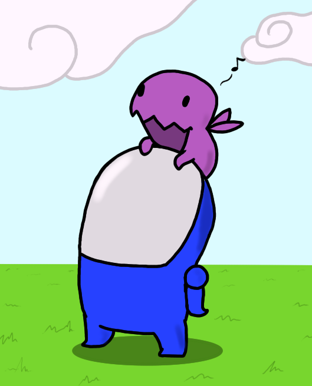

Mephi
Left after 3 cources
CGPA: 4
Senior analyst

Left after 3 cources
CGPA: 4
Marathonbet
Started in oct. 2015 as a junior esports anlyst. Tasks:learn how to create moneylines for a variety of matches/diciplines
Marathonbet
Started in march 2016.Tasks-creating/managing moneylines,risk management,UX improvements.
Marathonbet
Started in sep 2018.Tasks:product ownership,team management,UX improvements,result analytics,complaience,whatever else needed to improve product.
return (((matrix.flat(1)).filter(x=>x=='^^')).length)